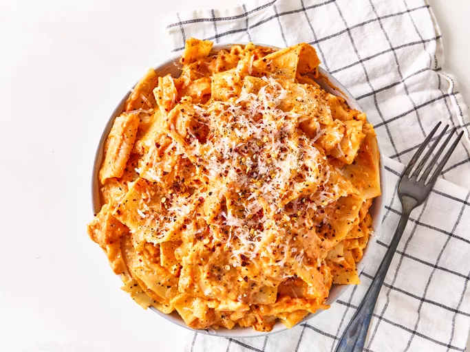

Home
Lasanga

Description
This 3 ingredient cheesy lasagna sheet pasta could not be easier. Serve topped with Parmesan cheese, red pepper flakes, and freshly cracked black pepper if you like.
- Prep Time: 5 mins
- Cook Time: 15 mins
- Total Time: 20 mins
- Servings: 6
Ingredients
- 8 ounces lasagna noodles, broken in half
- 1 (24-ounce) jar tomato sauce
- 8 ounces shredded whole milk mozzarella cheese
Steps
-
Bring a large pot of lightly salted water to a boil. Cook lasanga noodles in the boiling water, stirring occasionally, until tender yet firm to the bite, 10 to 12 minutes.git
-
Strain noodles and return to the pot. Add tomato sauce and cook on medium heat until sauce is heated through, about 5 minutes.
-
Add cheese and stir until cheese is melted. Serve immediately.